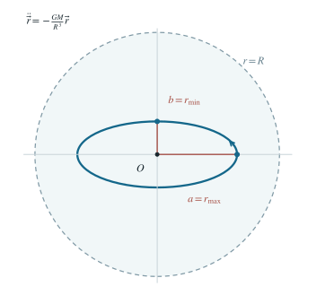

均匀气体云中的星际子弹轨道
由球形均匀云的内引力势与非零角动量，确定子弹的活动区域、径向转折点、轨道形状和周期。
1 题目
1.1 物理情境
一团球形均匀气体云的总质量为 、半径为 。质量 的稠密小气团可近似视为在该气体云的引力场中运动的质点，以下称“星际子弹”。
1.2 物理过程
子弹可能进入均匀云内部，也可能在云外运动。考察其给定能量和对云心角动量所允许的径向范围，以及由此形成的空间轨道。
1.3 已知参数和理想化假设
取无穷远处引力势能为零，。子弹的角动量大小与总机械能分别为
忽略气体阻力、质量交换和云自身的形变；气体云质量分布始终均匀且球对称。
1.4 求解目标
（1）判断子弹始终在云内、始终在云外，还是交替穿越云面；（2）求离云心最近和最远的径向转折距离；（3）求轨道形状及完整绕行一周的周期。

图中的椭圆按第（9）式给出的半轴比绘制；虚线圆为云面 ，轨道最远端仍在其内。
2 思路与提示
先把均匀球内部的引力势写正确，并比较总能量与云面势能；之后在有效势中求径向允许区间。
3 解答展开 / 收起
3.1 求球对称云内外的引力势
设 为距云心的距离。由球壳定理， 时只有半径 内的质量产生合力；包围质量为 。故径向引力为
令 ，从外向内积分第（2）式，并使势能在 处连续，得
在云面 。第（1）式给出 ；因为动能非负，子弹根本不能到达云面。因此它始终在云内，毋须先假定某条云外开普勒轨道。
3.2 用有效势求径向转折点
角动量守恒为 。把平面动能分成径向与切向两项，切向项可改写为 。因此云内的能量方程为
径向转折点满足 。令 ，把第（1）式代入第（4）式，逐项除以 ，得
把第（5）式看成关于 的二次方程，解得两正根
它们都小于 ，与上一步的区域判定一致。非零角动量造成 时有效势发散，因而最小距离也严格大于零。
3.3 识别二维谐振子的椭圆并求周期
子弹始终在云内，第（2）式的向心力正比于位移矢量。令 ，矢量运动方程就是
在轨道平面内选坐标轴沿其主轴。第（7）式的两个正交分量有相同频率，故可把轨道写成
这是一条以云心为几何中心的椭圆，而非以云心为焦点的开普勒椭圆。沿长短轴方向，距云心分别达到最大和最小，故第（6）式给出
两分量在 后同时回到原位置、原速度，完整轨道周期为
从长轴端到短轴端只经过四分之一轨道周期；单看距离 的重复周期为 ，不能与完整空间运动周期混淆。
4 方法与讨论
先用能量与云面势能比较，判定运动区域；确认始终在云内以后，再求转折点与轨道形状，避免把云外的 势误用于云内。两径向根是椭圆的半短轴与半长轴，而非云心在焦点的近、远日点。
还有一个独立校验：第（8）式的单位质量角动量为 。用第（9）式计算得 ，与题设严格一致。